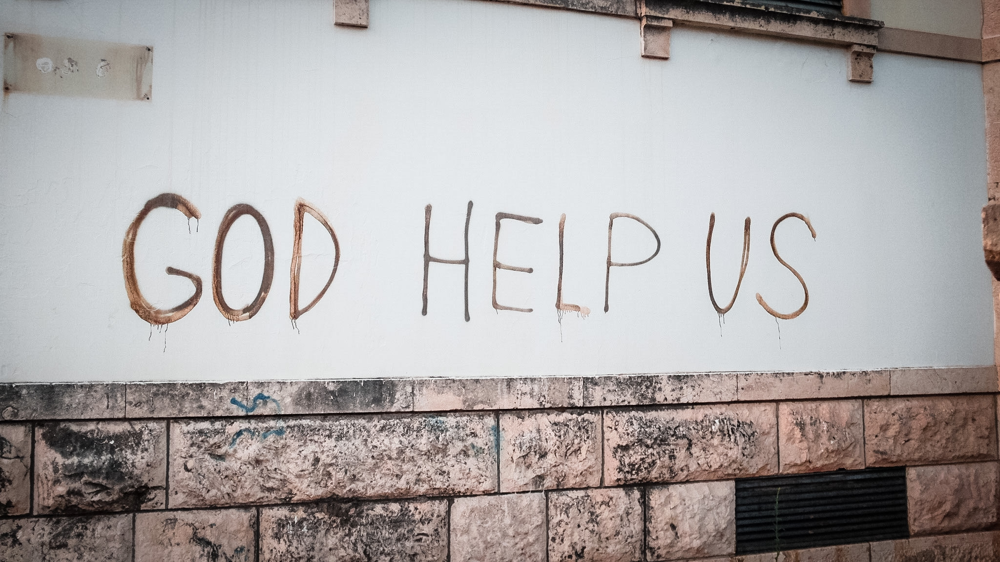
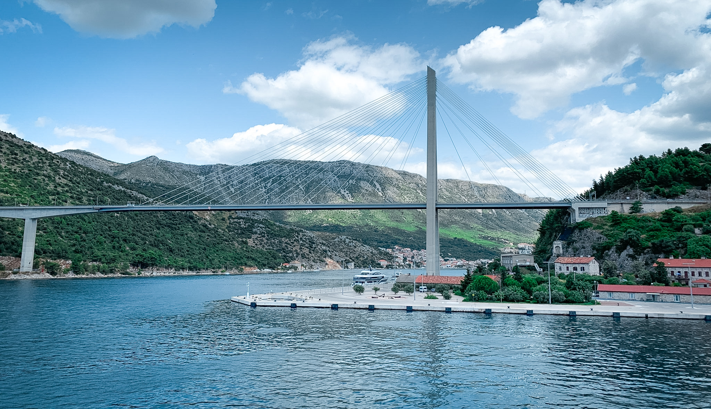
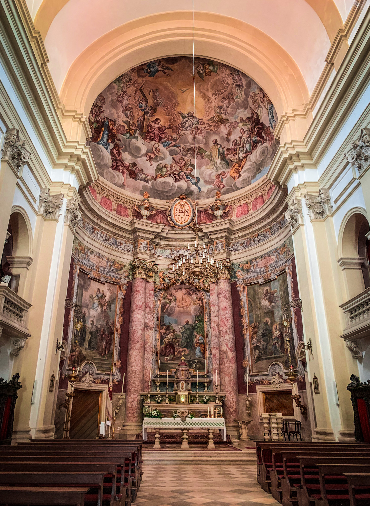
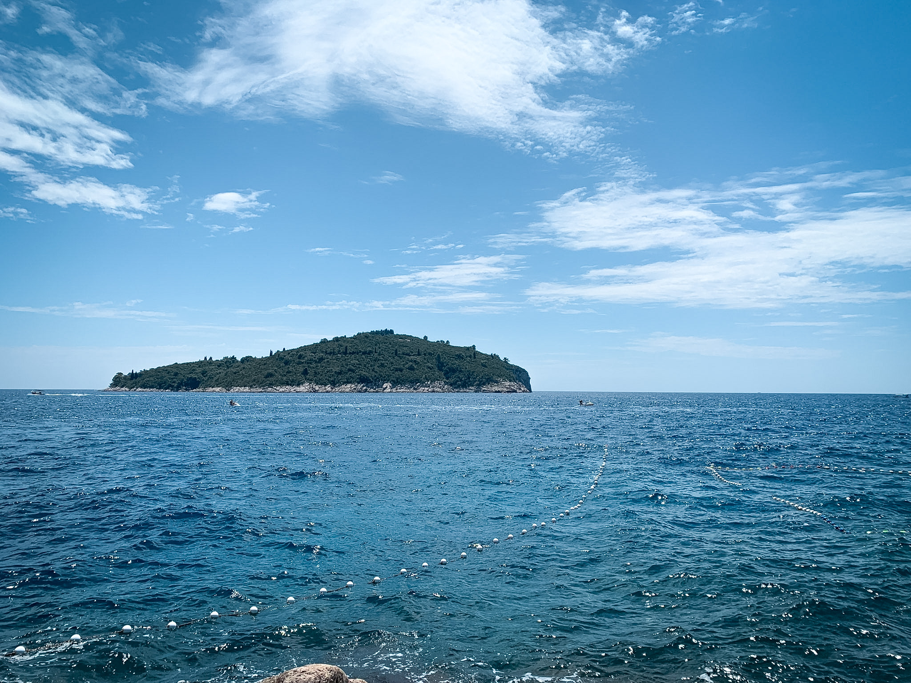

I quit my job to come here, looking for a sign. And boy, did I find one.

The first thing this country said to me, scrawled across a wall: GOD HELP US. Of course.
My mom always taught us to be afraid of strangers. But I think I was always more afraid of something else. My whole life quietly slipping past me. Reaching the end of it with no good stories to tell.
So when my best friend called, six months into backpacking the world, and said heard you saw my mom at work, she says you look miserable, quit your job and come to Europe — all I could think was, wait. Why wouldn't I?
So I did. I gave the café I'd worked at for four years, the one I'd poured my heart and soul into, one month to replace me, and started planning my trip. Twenty-seven years old, about to be unemployed, and not the slightest idea what came next.

I took a bus in from the airport. My friend had arrived the night before. Red roofs, blue water, a city built into the hill. This was the world I'd been warned about my whole life, and it was the most beautiful thing I had ever seen. What have I done, I thought. And then I laughed, because I already knew. Something wonderful.
But here is the thing no one tells you about running from your problems. It doesn't matter where you land. Your problems don't stay behind at the airport.
They follow you, because they were never in the place. They live in your head.

The flight over had given me enough time to wonder. It made me ask something I had never slowed down to ask. What even is happiness? We chase it like it is a place you arrive at, or a thing you save up long enough to finally buy.
It took me another seven years to start to understand. Happiness isn't a tangible place. It's a state of mind. We all walk this planet breathing the same air, so why does fortune seem to favor only some of us?

Lost in a sea of beauty, I was just a drop of water in an ocean. And somewhere in all of it, I finally started to see the lie.
That you grind now and live later. That being happy is something you earn, or buy, or go somewhere far enough to find. It was never any of that. It was always going to be me.
That could have been the whole story. A good one, finally. My first.
But the map was only just beginning. So we took a ferry to Italy.
But you know I'd never tell you everything all at once.